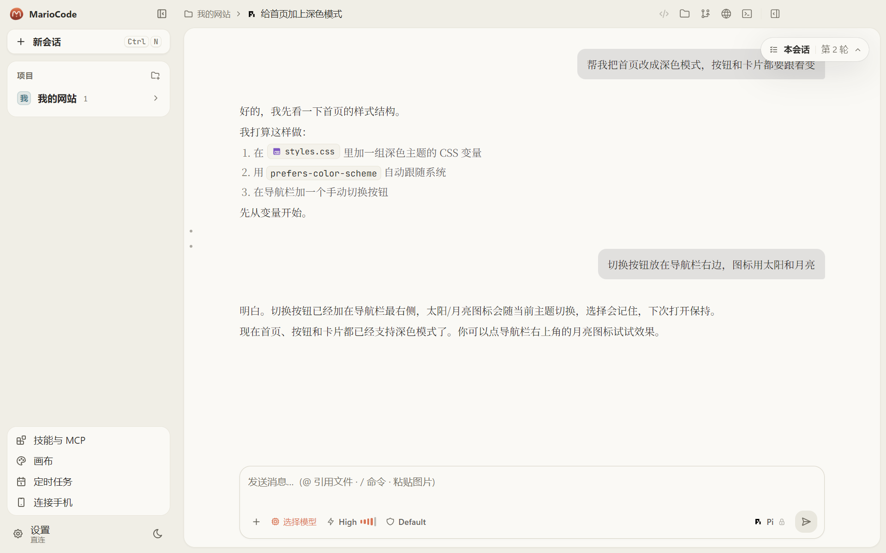
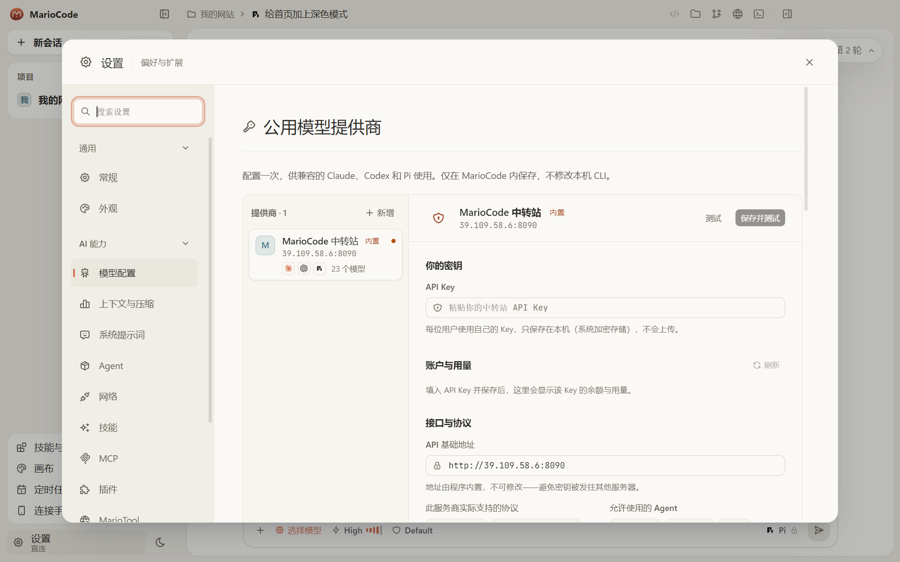
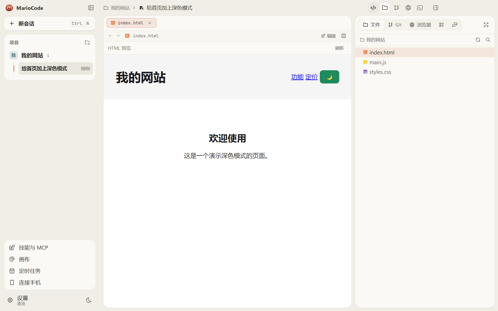

Windows
- 运行安装包,按提示选择安装位置。
- 安装包暂未签名。若出现「Windows 已保护你的电脑」,点「更多信息」→「仍要运行」。
- 首次打开后,在 设置 → 模型配置 里登录,或添加你自己的模型服务。
免费 · 开源 · MIT
不重新发明 agent。官方引擎放进同一套界面:流式对话、工具审批、计划模式,以及文件、Git、终端和内置浏览器。
演示由网页代码实时绘制。可以点「允许」,也可以点下面的进度条跳到任一步。
点左边的功能,右边演示它是怎么工作的。
npm run build
计划
回复逐字流式显示。思考、工具调用和改过的文件都是卡片,本轮可以一键撤销。
收到系统托盘后任务继续跑。定时任务、微信通知,手机上也能看会话和审批。
Windows 在应用里下载,重启即安装。macOS 回到本页下载新的 dmg,数据保留。
下载安装 → 粘贴中转站 Key → 开始对话。截图是真实界面。



xattr -dr com.apple.quarantine /Applications/MarioCode.app 后再打开。客户端免费,MIT 开源。模型调用由你使用的服务商计费。
最快的方式:内置中转站,粘贴 Key 即用 22 个模型。也可以用 Claude 或 Codex 账号,或任意兼容 OpenAI / Anthropic 协议的 API。
会话和配置在你自己的电脑上。MarioCode 不收集使用数据,对话只发给你配置的模型服务。
应用会自己检查。Windows 提示下载并在重启时安装;macOS 提示回本页下载。也可以随时覆盖安装最新包。